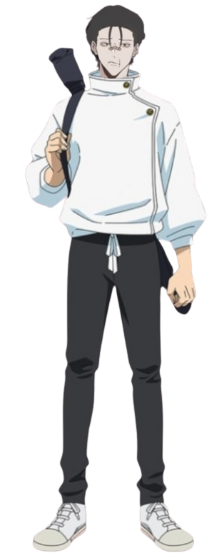

17 anos (2007)
Zephy Nullus
Espadachim focado em Furtividade

Zephy cresceu em um dojo, treinando sob um mestre que o desprezava. O mestre traiu e matou sua família, e Zephy, ao sobreviver, percebeu que força era sinônimo de controle sobre a vida. Determinado a ser forte, ele focou no treino físico e adotou a furtividade como seu estilo de luta, inspirado por uma frase de seu pai: "Quem não pode ser visto, torna-se invencível." Entrou para a escola de jujutsu, aprimorando suas habilidades e transformando sua katana em extensão de sua vontade.
Vicio(s): Whiskey